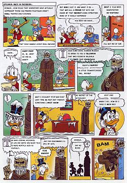

The Quest for Kalevala (Extra page)
|
 Epilogue for "The Quest for Kalevala" (FI) Here presented for the first time with Don Rosa's original dialogue! |
|
|
Or here to se various versions of this story. |
|
When "The Quest for Kalevala" was published in a hardcover book in Finland in 1999 an extra 34th page appeared in the end of it. When asked about this Don Rosa says: When I was doing extra work for the Finnish book such as texts for all the stories and so forth, the editor said something about the fact that $crooge had lost his hat in the Underworld. So I thought getting his hat back would make a cute delayed "epilogue" to the story. The problem then became trying to stop any other publisher from using that extra page since it does not belong on the end of the story -- it spoils the ending if you put a gag right on the story's ending. It should only be used in a delayed fashion. Later the Germans found out about it and told me they would include it in the last Rosa-album they did. Luckily they told me so I could insist that the page must appear at the end of the album, after the second (non-Kalevala) story. Other publishers probably won't ever even know about that page since it was not done for Egmont as was the main story... it was done only for Finland... so Egmont does not send it out with the story itself.